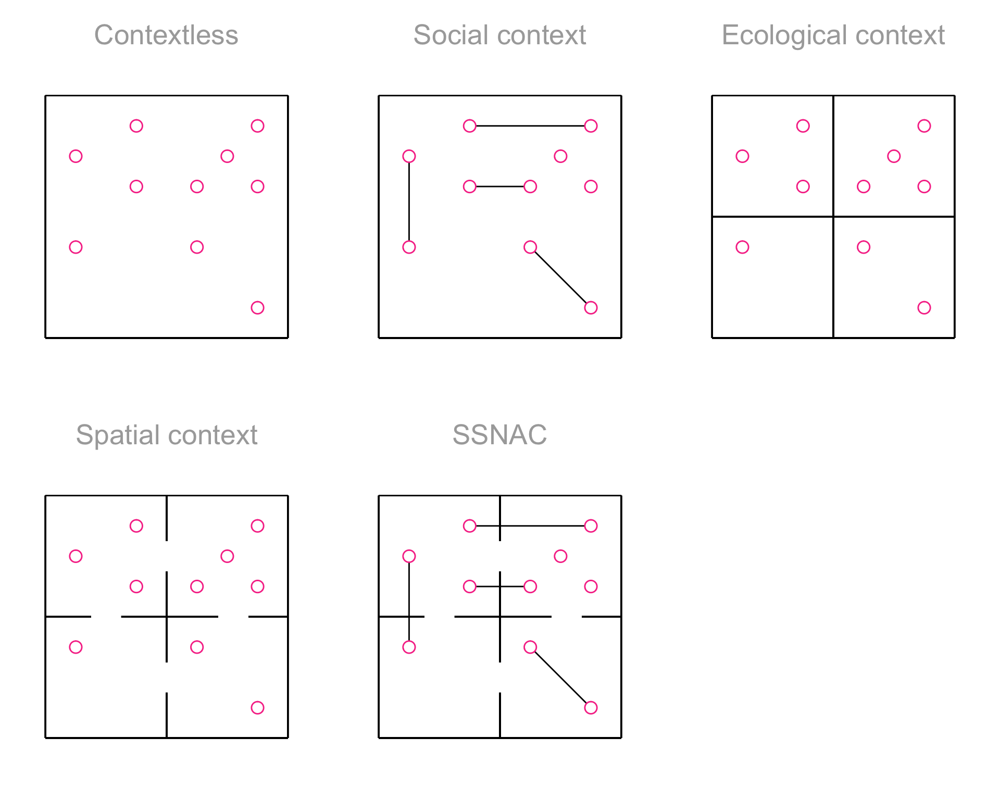

# Access custom defined functionstargets::tar_source(files =paste0(here::here(), "/R_functions"))
tar_source() only sources R scripts. Ignoring non-R files:
/Users/keletso/Downloads/mpxnyc_data_analysis/R_functions/.DS_Store,
/Users/keletso/Downloads/mpxnyc_data_analysis/R_functions/1_data_processing/.DS_Store,
/Users/keletso/Downloads/mpxnyc_data_analysis/R_functions/2_analysis_data_main_report/.DS_Store,
/Users/keletso/Downloads/mpxnyc_data_analysis/R_functions/7_table_function_main_report/.DS_Store,
/Users/keletso/Downloads/mpxnyc_data_analysis/R_functions/unassigned/.DS_Store
Example: Longitudinal mortality in South Africa
show mortality analysis
will show estimands in example
will show estimation in example
Simplified graphic representation: DANG
Consideration of multiple types of observations
Consideration of repeated observations
Background
The Social Spatial Network Analysis with Causal interpretation framework is an approach to incorporating social and spatial context in causal analyses of individual-level epidemiologic data. It explicitly accounts for measured relationships among people, among places, and between people and places.
Social process and relationships to some extent play out in physical space since humans exist and interact in physical space. Network theorists have observed that, for instance, the relation of trust is heavily dependent on the physical context under consideration, along with the social context. For instance, Small, found that women were x more likely to trust strangers to take care of their own children on the premises of a school compared to in public spaces. Another example the idea of propinquity, that spatial nearness between people shapes their likeihood of forming relationships attest to the influence of the spatial on the social.
Physical space, therefore, is an important aspect of any social enquiry. It should be surprising, then, that current models for quantitative causal inference do not consider space as a structure that arrays most causal processes under investigation. On the other hand, the scholarly tradition of causal inference in epidemiology has proven its refusal time and again to develp models that make sense of the social per se, opting rather to concern itself with the causal effects of abstract interventions on the outcomes of contextless humans.
The SSNAC is a byproduct of an enquiry into the interactions of people in the city as a space. It concerns itself with patterns of connection between places as a result of the exchange of people. Obversely, it concerns itself with patterns of interaction between people as a result of the places they coinhabit. In this study, we enquire about a specific type of social interaction (group sex) in the spatial context it unfolds in. We consider both the proximal spatial context of the hotel room, apartment, or park in which the sex happens as well as the more distal spatial context of the census tract, neighborhoods, district, or borough that is the context of the context.
We were initially interested in understanding how to distribute mpox vaccine to gay men in the most efficient way, given the measured structure of the sexual and social networks we form. We had been struck, in the aftermath of the initial mpox outbreak, at the willingness of informed and uninformed experts to attribute the rapid dissemination of this pathogen in this group to the “structure” of our “sexual network” without studying that structure. Indeed, even if they had consulted the research literature, they would find very few studies that actually measured networks. The vast majority of studies on social networks and health measure what they term egocentric networks. The way those measures are taken, however, almost always guarantees that the actual object under study are the perceptions of study participants of their own social networks.
We aimed to measure these networks directly and indirectly in order to test some of the explanations offered for the rapid dissemination of mpox and to inform responses. In the process of solving some of the practical challenges occasioned by this endeavor, we developed the major components of the Social Spatial Network Analysis with Causal interpretation framework. Before outlining these, we describe the problems.
Competing for attention
Brevity
Ad compaign
Color scheme
Interactivity RuPaul
Measuring sensitive information
Individual characteristics
Coarsened variables like age
Relationships
Referral via QR code
Census tract conversion
Analyzing on-the-fly
Graph database with dashboard
Social spatial network analysis with causal interpetation
We give a preliminary outline for a framework for organizing and analyzing network data along with spatial data. This framework emerges from a few years of trial and error with epidemiologic analyses of network and spatial data.
Integrating spatial and social context
To motivate the framework, we consider a study investigating the risk of acquiring a cold among individuals (pictured as dots in physical space in each frame of Figure 1) in a setting where there is one known infected person. The simplest approach would be to assign average risk of acquiring a cold to each individuals. The problem with this strategy, though, would be that not all individuals have the same risk once we know who the infected person is. Those who are more likely to interact closely with them have higher risk, but not all people are equally likely to interact.
Figure 1: Approaches to incorporating context in studies of individual health
A social network analysis would gain a more granular understanding of risk by assigning people who are connected to other people a higher risk of acquiring the cold than those who have no relationships. In addition, different connected components of the network could be assigned differnet levels of risk.
An ecologic approach would be to divide up the area into households and assign a different level of risk based on the household (third panel from left). If we knew who has a cold, we could assign people in the same household higher risk for acquiring the cold than others. This anlysis, however, would ignore the fact that households are not equally connected.
A spatial analysis would enhance this analysis by enriching household data with a spatial weights matrix indicating which pairs of households are neighrbors (second panel from right). Then the risk of aquiring a cold in a given household would be a function of the risk of aquiring a cold among individuals in neighboring households.
An SSNAC analysis (rightmost panel) would take advantage of both spatial and social network data, assigning risk so that the risk of acquiring the cold is a function of the household the individual belongs to, the neighboring household, and the social network connections.
The Person-Place graph
The central data structure in a SSNAC is the person-place graph. Figure 2 depicts the rightmost frame of Figure 1 by showing spatial units as nodes in a network, connecting adjacent spatial units with a network edge, and connecting individuals with the households they belong to. To show the flexibility of this data object, we added an additional type of relationship an individual can have with a household - that of an employee.
The majority of study data are stored as node or edge attributes. For instance, person nodes might have attributes like age and race whereas place nodes could have attributes like density or surface area. An edge linking a person to a place might have an attribute conveying how the person relates to the place. For instance in Figure 2, some edges indicate residence, some indicate next
At the minimum, a social and spatial network analysis with causal interpretation should include an explicit statement of:
what types of observational unit nodes represent
what types of ties exist in the network
rules about allowable edges
the counterfactual contrast
theory defining:
meaning of nodes,
meaning of edges
description of spreading process (if necessary)
Theory
Old structures in sociology
It is crucial in a SSNAC to be clear about the theory that allows the researcher to depict the situation under study as a person-place network, and that will be used to interpret any results obtained. In particular, it is important to clearly state the research question under investigation before defining nodes and edges. For instance, if we were studying the spread of gossip, we might decide that the only edges which are important for transmission of gossip are friend ties and resident ties. In this case, we would be asserting a theory of causation which states that in this setting, people do not gossip with their neighbors, but do gossip with their friends and with their household members. This is different from the theory under use in an infectious disease investigation in the same setting. In this case, assuming that friends, neighbors, and household members all spend time in confined spaces, all the edges are important to account for in analyzing the transmission of airborne disease.
New queries in causal inference
There are four types of causal queries that focus on node-level outcomes in the SNACC framework.
Person-To-Place: Evaluating the causal impact of a person-level intervention on place-level outcomes for some defined set of people and some defined set of places. e.g. What is the impact of vaccinating college-aged adults in New York City on mpox incidence in Union Square (a favourite hangout spot for college students)
Person-to-Person: Evaluating the impact of a person-level intervention on person-level outcomes for some defined sets of people. e.g. How does vaccinating all cisgender white men in New York City affect mpox incidence among Black and Latinx cisgender black men in New York City?
Place-to-Place: Evaluating the impact of a place-level intervention on place-level outcomes for some defined sets of places. e.g How does vaccinating Manhattan affect mpox incidence in Brooklyn?
Place-to-Person: Evaluating the impact of a place-level intervention on person-level outcomes for some defined set of people and some defined set of places. e.g. How does vaccinating Harlem affect mpox incidence among cisgender black men in New York City
In addition there is an endless potential for constructing causal queries that focus on characteristics that cannot be represented as node characteristics for any single node, but rather are characteristics that emerge as a result of the pattern of interactions among nodes. For examples, see the section on social causal inference.
Theory
Old structures in sociology
It is crucial in a SSNAC to be clear about the theory that allows the researcher to depict the situation under study as a person-place network, and that will be used to interpret any results obtained. In particular, it is important to clearly state the research question under investigation before defining nodes and edges. For instance, if we were studying the spread of gossip, we might decide that the only edges which are important for transmission of gossip are friend ties and resident ties. In this case, we would be asserting a theory of causation which states that in this setting, people do not gossip with their neighbors, but do gossip with their friends and with their household members. This is different from the theory under use in an infectious disease investigation in the same setting. In this case, assuming that friends, neighbors, and household members all spend time in confined spaces, all the edges are important to account for in analyzing the transmission of airborne disease.
hypothetical intervention
Orphan
We examined two approaches for selecting a community district to immunize, corresponding to different intervention priorities. In the first, we select the next community district to immunize to maximize the number of people to be immunized. In the second, we select the next community district with the goal of minimizing the likelihood of contagion between community districts.
Consider a sequence of node sets
\[
N^{(k+1)}_\text{susc} = \begin{cases} N &\text{ if } k = 0 \\ \{s : \psi(s,m) = 0, s \in N^{(k)}_\text{susc}, s \neq m\} & otherwise \end{cases}
\] where \(m \in N^{(k-1)}_\text{susc} \cap N_c\) is the \(k\)th community district to be vaccinated.
\[
h(V_{(k-1)}) = \mathbf{R}_k
\]
with entries
under the contact neutralizing strategy and
\[
R_{kj} = \text{ deg}_{G_c}(j|1 -\mathbf{V}_{(k-1)})
\] under the movement neutralizing strategy
Contact-neutralizing
In the contact-neutralizing strategy \(n^{(k+1)}\) satisfies:
and so that given \(G^{(k)}\), we calculate \(G^{(k+1)}(N^{(k+1)}, \psi^{(k+1)})\) by selecting a community district \(n^{(k+1)}\) along with all participants connected with it
\[
N^{(k+1)} = N^{(k)} \backslash \ H^{(k+1)}
\] The updated adjacency function \(\psi^{(k+1)}\) preserves all the edges represented by \(\psi^{(k)}\) for terminal nodes included in \(N^{(k+1)}\):
Note: All measures defined in the previous sections can be calculated based on the updated graph \(G^{(k)}\). We indicate this case by adding a superscript with index number \(k\) for the particular measure. e.g. We can define \(s_j^{(k)}|A\) relative to graph \(G^{(k)}\) just as \(s_j|A\) is defined relative to graph \(G\).
Intervention strategies
We examined two approaches for selecting a community district to immunize, corresponding to different intervention priorities. In the first, we select the next community district to immunize to maximize the number of people to be immunized. In the second, we select the next community district with the goal of minimizing the likelihood of contagion between community districts.
Contact-neutralizing
In the contact-neutralizing strategy \(n^{(k+1)}\) satisfies:
A longstanding division among epidemiologists is about how we should regard causal inference models in light of their assumptions.
I divide the field into two groups: both believe that social causes such as racism are incompatible with the identifiability assumptions of the causal inference model. Where they seem to disagree is what to do about that fact. The first camp, which I term social epidemiooogists believe that social forces are too important an explanation of the distribution and determinants of health states in the population. They hold that quantitative causal inference practice, to the extent that precludes the investigation of social causes, is not fit for purpose. They ask for a pluralistic practice of quantitative causal inference.
On the other hand are epidemiologists who belive that the only contribution epidemiologists can make to scholarship is must be through the causal inference models which have grown hegemonic. To the extent that quantitative epidemiologic research uses these causal inference models, it creates more confusion than clarity. This is because the results of these analyses are not interpretable except under the identification assumptions, which include the assumption of SUTVA or consistency.
Social epidemiologist are hamstrung by their readiness to cede the domain of developing causal infgerence models that suit their epistemic goals to anti-social epidemiologists, focusing on critique, if they engage the theory at all. Anti-social epidemiologists, on the other hand, are trapped both by their confusion about the necessarily social determination of the outcomes they study, secondary to their unwillingness to read social epidemiologists carefully. (i.e. to not mistake their confusion for intractability)
The result of this intransigence is the casting of a mathematical convenience (the assumption that people do not influence each other) as an edict handed down from on high (that if people influence each other in a given setting, that setting is not analysable through causal inference methods).
To put a fine point on the analytical decision: either we decide that individuals are independent of each other, risking that they are interdependent in a way that affects our estimates; or we decide that invidisuals are not independent of each other, risking the misspecification of the function which links individuals outcomes with one another.
In this section we take the latter decision and illustrate using published studies based on publicly available datasets.
(note in our analysis observational units are independent but analytical units are not).
Towards a statistically principled, gay, liberatory, feminist, socialist, networked, causal inferential epidemiology
Social spatial network analysis with causal interpetation
We give a preliminary outline for a framework for organizing and analyzing network data along with spatial data. This framework emerges from a few years of trial and error with epidemiologic analyses of network and spatial data.
Integrating spatial and social context
To motivate the framework, we consider a study investigating the risk of acquiring a cold among individuals (pictured as dots in physical space in each frame of Figure 1) in a setting where there is one known infected person. The simplest approach would be to assign average risk of acquiring a cold to each individuals. The problem with this strategy, though, would be that not all individuals have the same risk once we know who the infected person is. Those who are more likely to interact closely with them have higher risk, but not all people are equally likely to interact.

A social network analysis would gain a more granular understanding of risk by assigning people who are connected to other people a higher risk of acquiring the cold than those who have no relationships. In addition, different connected components of the network could be assigned differnet levels of risk.
An ecologic approach would be to divide up the area into households and assign a different level of risk based on the household (third panel from left). If we knew who has a cold, we could assign people in the same household higher risk for acquiring the cold than others. This anlysis, however, would ignore the fact that households are not equally connected.
A spatial analysis would enhance this analysis by enriching household data with a spatial weights matrix indicating which pairs of households are neighrbors (second panel from right). Then the risk of aquiring a cold in a given household would be a function of the risk of aquiring a cold among individuals in neighboring households.
An SSNAC analysis (rightmost panel) would take advantage of both spatial and social network data, assigning risk so that the risk of acquiring the cold is a function of the household the individual belongs to, the neighboring household, and the social network connections.
The Person-Place graph
The central data structure in a SSNAC is the person-place graph. Figure 2 depicts the rightmost frame of Figure 1 by showing spatial units as nodes in a network, connecting adjacent spatial units with a network edge, and connecting individuals with the households they belong to. To show the flexibility of this data object, we added an additional type of relationship an individual can have with a household - that of an employee.
The majority of study data are stored as node or edge attributes. For instance, person nodes might have attributes like age and race whereas place nodes could have attributes like density or surface area. An edge linking a person to a place might have an attribute conveying how the person relates to the place. For instance in Figure 2, some edges indicate residence, some indicate next
Defining SSNAC
A SSNAC is -
At the minimum, a social and spatial network analysis with causal interpretation should include an explicit statement of:
what types of observational unit nodes represent
what types of ties exist in the network
rules about allowable edges
the counterfactual contrast
theory defining:
meaning of nodes,
meaning of edges
description of spreading process (if necessary)